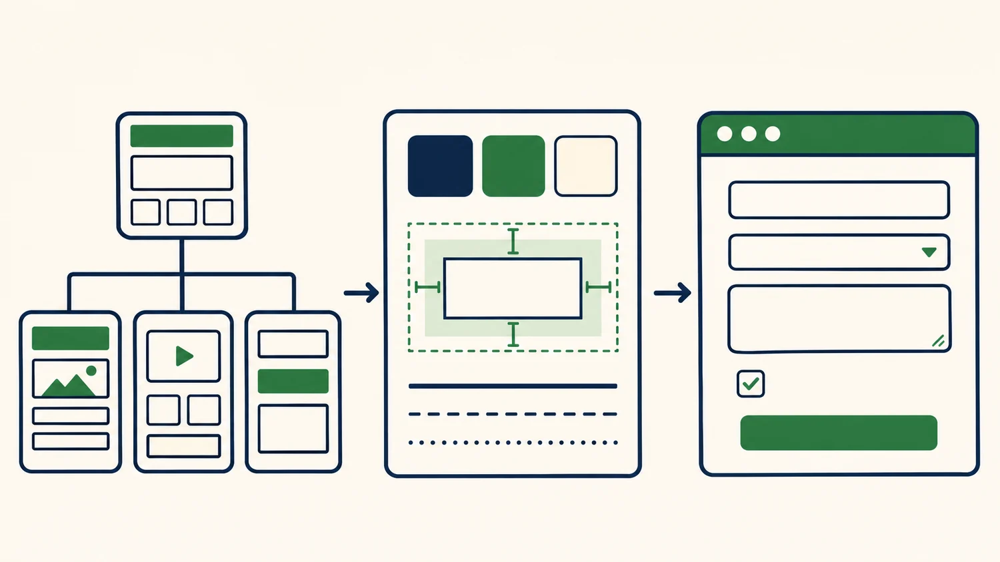

网页制作课堂复习
先读懂 HTML 文档与元素，再用 CSS 控制外观，最后练习表单控件与提交。每个知识点附自测和出处。
按学习顺序复习
知识点讲解视频（1） · 待发布
视频待发布，发布后可在此播放。
- HTML文档头部与meta刷新 1:51
HTML文档头部与meta刷新
认识meta刷新指令的主要属性及浏览器行为，并了解现代网页对自动跳转的使用限制。
- meta属于文档元数据内容，常放在head中，用来提供页面相关信息或特定处理指令。
- http-equiv设为refresh时，content中的秒数可以指定浏览器刷新当前页面的等待时间。
- content只包含秒数时表示刷新当前页面；同时提供url目标时表示等待指定秒数后跳转。
- 课堂示例中的content=10表示等待约10秒，content=0并指定url表示无需额外等待后进行跳转。
- 现代网站的常规页面迁移更适合使用服务器HTTP重定向；自动刷新和延时跳转可能影响阅读、可访问性及用户操作。
易错点 不能把http-equiv=refresh当作所有HTTP重定向的通用实现，也不建议为了展示这一语法而让学习页面真实自动跳走。
自测 页面head中的meta配置为http-equiv=refresh，content为10且不包含url。浏览器通常会执行什么操作？
浏览器通常在约 10 秒后重新载入当前页面。请求里未提供新的目标 URL；页面重载后如果仍保留同一配置，计时会再次开始。
课堂图号 10-09#01
知识点讲解视频（1） · 待发布
视频待发布，发布后可在此播放。
- HTML有序列表、无序列表与嵌套 1:58
HTML有序列表、无序列表与嵌套
正确区分列表容器、列表项目及嵌套结构，理解编号和项目符号如何产生。
<ul>
<li>复习顺序
<ol start="6" reversed>
<li>表格</li>
<li>选择器</li>
<li>表单</li>
</ol>
</li>
</ul>- ul表示无序列表，ol表示有序列表，li表示列表中的一个项目。
- 有序列表可以使用数字、大小写英文字母及罗马数字等编号样式。
- ol的start属性可设置起始编号，reversed可使编号按相反方向变化。
- 嵌套列表应放入父级的某个li项目中，形成清晰的父子关系。
- 无序列表的disc、circle、square等标记形式属于视觉呈现，现代样式更推荐使用CSS的list-style-type管理。
易错点 不能将子列表随意放在两个li之间当作同级结构。HTML结构层次和项目符号外观是两个独立问题。
自测 一个有序列表包含3个项目，起始编号为6，并设置reversed。页面应按什么顺序显示编号？
显示6、5、4。start确定起始数值，reversed使随后项目的编号递减。编写代码时仍应把每个项目正确放在li内。
课堂图号 10-12#01、10-12#02–03、10-20#05
知识点讲解视频（1） · 待发布
视频待发布，发布后可在此播放。
- 超链接、相对路径与页面锚点 1:58
超链接、相对路径与页面锚点
掌握同页定位、跨页定位、相对目录和新标签页打开的常见用法。
- 超链接使用href提供目标地址，目标可以是同页片段、站内文件或完整URL。
- 同页片段标识使用井号加目标id，可以把用户导航到相应的页面元素。
- 相对路径中的../表示从当前目录返回上一层；路径解析以当前文档或有效基准URL为依据。
- 跨页定位可以在目标页面路径后附加片段标识，并要求目标元素存在对应id。
- target设为_blank可以在新浏览上下文中打开页面；外部新窗口链接可明确添加rel=noopener以避免新页面访问原页面的窗口对象。
易错点 id是片段定位目标，不是文件名。使用../时，应根据目录结构判断文件的真实相对位置，不能把../理解为网站根目录。
自测 当前网页位于study/unit/page.html，想链接到study/index.html中id为top的元素，相对路径应怎样写？
相对路径为../index.html#top。①从unit目录通过../回到study目录。②定位index.html。③使用#top定位目标元素。
课堂图号 10-19#01
知识点讲解视频（1） · 待发布
视频待发布，发布后可在此播放。
- HTML表格结构、标题与单元格 1:48
HTML表格结构、标题与单元格
理解表格的层次结构、表头和数据单元格，并掌握水平和垂直对齐的区别。
- table是表格容器，tr表示行，th通常表示表头单元格，td表示数据单元格。
- caption可为表格提供整体标题，表头单元格应根据数据关系表达正确的语义。
- 一个三行三列表格可以由三个tr组织，每个常规行包含三个单元格；跨行、跨列时需要另外计算实际布局。
- text-align主要控制单元格内行内内容的水平对齐，vertical-align可用于控制表格单元格内容的垂直对齐。
- 样式可以作用于表格、行或单元格，但最终显示效果取决于CSS层叠、继承及属性本身的适用规则。
易错点 th和td的区别不仅是默认加粗或居中，前者还具有表头语义。不能认为表格、行、单元格之间所有CSS属性都会自动继承。
自测 需要绘制一个两行两列的数据表格，其中第一行是字段名称，第二行是对应数据。应使用几个tr，第一行适合使用哪种单元格？
使用2个tr。第一行适合使用2个th表示表头，第二行使用2个td表示数据。表头与数据的关联还应符合实际内容结构。
课堂图号 10-19#02、10-20#03–04
知识点讲解视频（1） · 待发布
视频待发布，发布后可在此播放。
- 表格边框、分隔线与历史属性 1:59
表格边框、分隔线与历史属性
区分传统HTML表格外框和内部线条的控制方式，学会用CSS完成现代实现。
table { border-collapse: collapse; }
th, td { border: 1px solid #666; padding: 0.4rem 0.6rem; }- 历史HTML表格中的frame属性用于指定外围边框的可见部分。
- 历史rules属性用于描述表格内部单元格之间的分隔线形式。
- frame的above、below、hsides、vsides等值用于区分不同外框位置；rules的rows、cols、all等值用于区分内部线条。
- 现代网页更推荐使用CSS的border分别设置表格和单元格边框。
- border-collapse可以控制相邻单元格边框采用合并还是分离的布局方式。
易错点 frame与rules是历史表格表现属性，不应作为新网站样式实现的首选方案；外边框与内部边线也不能混为一个概念。
自测 某表格需要在每个单元格周围显示细边框，并使相邻边框合并为单条线。现代CSS应该重点使用哪些属性？
使用border设置表格单元格边框，使用border-collapse:collapse使相邻边框合并。应将这些规则放在CSS中，而不是依赖旧式frame或rules属性。
课堂图号 10-20#01–02
知识点讲解视频（1） · 待发布
视频待发布，发布后可在此播放。
- CSS规则、三种引入方式与基础颜色 1:54
CSS规则、三种引入方式与基础颜色
理解CSS选择器与声明的关系，并能够比较行内、内部和外部样式。
- CSS规则通常由选择器和声明块构成；声明使用属性名、冒号、属性值及分号表达样式。
- CSS可以通过元素的style属性、文档中的style样式块或外部样式表引入。
- 外部样式表通常通过link元素的rel=stylesheet关系引入，有利于页面之间复用样式。
- color用于文字颜色，background-color用于背景颜色；常见颜色表示方法包括颜色关键字、十六进制值和rgb形式。
- 最终样式由层叠来源、重要性、层叠层、选择器权重、作用范围及书写顺序等规则决定；普通行内声明通常优先于同来源的普通样式表声明。
易错点 不能简单认定内部CSS一定优先于外部CSS，也不能不考虑!important等规则就说行内样式具有绝对最高优先级。
自测 两个具有相同优先级和权重的普通CSS规则都设置了同一个元素的color属性，前一个为red，后一个为blue。没有其他规则干预时，最终颜色是什么？
blue。因为在这些层叠条件相同的情况下，后出现的声明覆盖前面的声明。若选择器权重或重要性不同，则需要重新比较层叠规则。
课堂图号 11-09#08–10
知识点讲解视频（1） · 待发布
视频待发布，发布后可在此播放。
- CSS否定伪类、根元素与结构伪类 2:03
CSS否定伪类、根元素与结构伪类
能够根据DOM中的实际兄弟顺序，正确判断伪类选择器是否匹配。
- :root匹配文档树的根元素，在普通HTML文档中对应html元素，常用于定义全局自定义属性。
- :not()用于排除符合指定选择条件的元素，例如p:not(.tip)匹配不具有tip类的p元素。
- :first-child和:last-child依据元素在兄弟元素中的实际先后位置判断。
- :first-of-type和:last-of-type依据同一父元素下相同元素类型的先后位置判断。
- 使用类型伪类时，比较的是元素类型而不是整个页面中同名元素的全局序号。
易错点 :first-child与:first-of-type不能互换。如果某个p前面有h2，它虽然可能是第一个p，却不一定是父元素的第一个子元素。
自测 某父元素依次包含h2、p、p、div四个元素。第一个p是否匹配p:first-child和p:first-of-type？第二个p是否匹配p:last-of-type？
第一个p不匹配p:first-child，因为它前面还有h2；它匹配p:first-of-type，因为它是第一个p。第二个p匹配p:last-of-type，因为它是该父元素内最后一个p。
课堂图号 11-09#01–02、11-17#01
知识点讲解视频（1） · 待发布
视频待发布，发布后可在此播放。
- CSS文本阴影、空白处理、溢出与链接状态 2:06
CSS文本阴影、空白处理、溢出与链接状态
掌握常见文本表现属性及链接交互状态，能够判断属性组合的效果。
- text-shadow可以设置水平偏移、垂直偏移、模糊半径和颜色；偏移允许负值，模糊半径不能为负。
- white-space控制文本空白与换行行为，normal、pre、nowrap具有不同的保留空白和折行方式。
- text-overflow中的clip用于裁切溢出内容，ellipsis用于显示省略提示；单行省略通常还需要限定宽度、禁止自动换行和隐藏溢出。
- text-indent可以控制文本块首行缩进，例如2em表示相对于相应字体尺寸的长度。
- 链接伪类:link、:visited、:hover、:active分别对应未访问、已访问、悬停和激活状态；在相同权重下常按照LVHA顺序书写，并可额外考虑键盘焦点状态。
易错点 仅设置text-overflow:ellipsis通常不能保证出现省略号；还需要元素确实产生可被裁切的文本溢出。:hover也不等于所有设备都具有鼠标悬停。
自测 某单行标题希望超出固定宽度后显示省略号。除了text-overflow:ellipsis，还应设置哪些关键条件？
需要使元素具有可发生溢出的宽度限制，常配合white-space:nowrap禁止自动换行，以及overflow:hidden裁切多余内容。三个方面共同作用才能实现常见单行省略效果。
课堂图号 11-09#03–06、11-09#07
知识点讲解视频（1） · 待发布
视频待发布，发布后可在此播放。
- CSS文本对齐、容器居中与传统align属性 2:05
CSS文本对齐、容器居中与传统align属性
能够区分文字在容器中居中、容器本身居中以及历史HTML对齐写法。
- text-align:center主要控制容器内行内级内容的水平对齐，不直接让容器自身水平居中。
- 对于具有适当宽度且存在剩余水平空间的块级容器，可以使用左右自动外边距进行水平居中，例如margin:0 auto。
- 固定高度且只有单行文本时，可以通过适当设置line-height实现视觉上的垂直居中，但不适合一般多行内容。
- 现代多行或复杂布局可采用Flexbox等布局方式，根据主轴和交叉轴选择对齐属性。
- 旧教材可能通过align属性控制文本、图片或表格外观；现代实现应按实际需求区分text-align、margin-inline、caption-side、vertical-align等CSS属性。
易错点 margin:0 auto不是通用垂直居中方法；text-align:center也不会自动改变块级盒子在页面中的位置。历史align属性在不同元素上的含义并不完全一致。
自测 一个宽300px的块级容器需要在父容器中水平居中，同时希望容器内部文字居中。应分别采用什么CSS思路？
①让容器具有明确或适当的宽度，并使用左右auto外边距进行水平居中。②为容器设置text-align:center，使内部行内文本水平居中。二者分别解决容器位置与内容位置问题。
知识点讲解视频（1） · 待发布
视频待发布，发布后可在此播放。
- 表单结构、提交目标与控件归属 2:21
表单结构、提交目标与控件归属
理解form的职责和合法结构，避免将表单布局、字段名称和数据处理混为一谈。

- form用于组织一组具有提交关系的表单控件，action指定提交目标，method通常指定GET或POST等提交方式。
- 表单中的提示信息、可输入控件及提交按钮各有职责，表单结构不等同于接收数据的服务器程序。
- form内部可以包含合法的布局容器；使用表格进行教学演示时，可以让form包住整张table，并把输入控件放进单元格。
- 不能把form开始或结束标签随意插入table与tr或td之间，也不能将一个form嵌套在另一个form内部。
- 具有form属性的表单关联控件可以通过某个表单的id建立归属，即使该控件在DOM结构中不位于表单内部；单个控件在同一时刻只有一个表单拥有者。
易错点 课堂中关于一个控件可从属多个表单的历史表述存在歧义。现代HTML应区分一个控件可以重新指定表单归属，与同时归属于多个表单这两种不同情况；后者不是普通表单控件的规则。
自测 页面有两个表单，id 分别是 f1 和 f2。一个位于这两个表单元素之外的输入控件设置了 form="f1"。它也会归属 f2 吗？
不会。该控件通过form=f1明确关联id为f1的表单。仅因为页面存在f2，并不会同时产生第二个表单拥有者。
课堂图号 10-26#02–03、10-27#07–08
知识点讲解视频（1） · 待发布
视频待发布，发布后可在此播放。
- 表单字段的label、id、name与value 2:22
表单字段的label、id、name与value
准确理解表单标注、字段标识、提交键名和用户输入值之间的区别。
<form id="profile" action="/practice/profile" method="post">
<label for="student-field">昵称</label>
<input id="student-field" name="nickname" value="Ming">
<button type="submit">提交</button>
</form>- label可以通过for关联具有对应id的可标注控件，用户点击标签文字时通常可以聚焦或激活控件。
- id用于在文档中标识元素，可以配合标签关联、片段导航、CSS选择器及脚本操作。
- name通常作为表单提交数据的字段名称；value或用户当前输入值构成相应的字段值。
- 表单以符合规则的控件构建提交数据，未设置name的普通输入控件通常不会形成对应的命名字段。
- 页面外表单控件的form属性应引用目标form的id，而不是通过目标form的name建立该归属关系。
易错点 不要把name等同于id。label的for通常匹配控件id，而表单提交使用控件name作为字段键名；单独设置id并不等于已经提供可提交字段名。
自测 某文本输入框的id为student-field、name为nickname，用户输入Ming。其label的for应填写什么？正常表单提交时对应的键值是什么？
①label的for填写student-field，因为它要关联控件id。②正常成功提交该控件时，字段键值为nickname=Ming。③student-field主要是文档标识，并不是本例的提交键名。
知识点讲解视频（1） · 待发布
视频待发布，发布后可在此播放。
- 下拉菜单、option与optgroup分组 1:33
下拉菜单、option与optgroup分组
掌握下拉选择控件的组织方式，以及选项显示文字与提交值的区别。
- select用于建立选择控件，option提供具体可选项目。
- optgroup将相关option划入同一组，label用于描述该组选项。
- optgroup本身主要是选项的分组说明，不是用户能够直接选择并提交的普通选项。
- option的value用于表示选项的提交值；如果没有显式value，其值通常根据选项文本确定。
- selected可设置初始选中状态，最终提交哪个值还取决于用户实际选择和控件配置。
易错点 不能把optgroup的label当作用户最终选择的value，也不能通过在optgroup中再嵌套optgroup来建立任意多层分组。
自测 某select的name为city，组名为North，组内有一个显示文字为Alpha且value为a1的选项。用户选中该项后，正常提交的数据是什么？
提交字段为city=a1。city来自select的name，a1来自被选中option的value；North是分组标题，不作为该字段的提交值。
知识点讲解视频（1） · 待发布
视频待发布，发布后可在此播放。
- 数字输入、范围滑块、datalist与输入建议 1:41
数字输入、范围滑块、datalist与输入建议
能够区分直接输入、滑块调节与可选建议，并正确理解相关属性。
- input的number类型用于输入数字，浏览器可以提供键入与增减调节等界面。
- range类型通常以滑块表示范围内的一个数值，适合不强调精确键入的调节场景。
- min和max用于指定允许的数值上下界，step用于控制步进约束，value用于表示初始值或当前值。
- datalist提供候选选项，input通过list属性引用对应datalist的id。
- datalist通常允许输入列表以外的值，而普通单选select主要在已有option中选择。
易错点 datalist不是强制只能从建议列表选择的控件。range的外观、步长及界面交互也不能等同于number输入框。
自测 某文本输入框需要显示三个建议词，但仍允许用户输入第四个词。应该优先选择select还是input配合datalist？
应优先考虑input配合datalist。①给datalist设置id。②为input的list设置相同标识。③在datalist中提供三个建议项。用户仍可输入其他文本。
课堂图号 10-27#04–06
知识点讲解视频（1） · 待发布
视频待发布，发布后可在此播放。
- 提交按钮、重置按钮与普通交互按钮 1:56
提交按钮、重置按钮与普通交互按钮
掌握按钮三种常见类型，并理解表单提交的数据流及安全边界。
- button的type=submit表示提交相关表单，type=reset表示按表单重置规则恢复控件状态，type=button表示普通按钮。
- 在关联表单的常见情形下，未明确指定type的button默认具有提交行为；只需要自定义交互时应写明type=button。
- input的type=submit可以创建提交控件，显示文字通常由value指定；button元素可以容纳文字及其他允许的内容。
- GET方式通常把提交数据编码进请求URL，不适合通过查询字符串传输密码等敏感信息。
- POST方式把表单数据放入请求体，但POST本身不等于加密或安全；真实敏感信息传输仍需要HTTPS及服务端安全处理。
易错点 button没有指定type时，不能想当然认为它只是普通点击按钮；同时也不能把reset解释为清空所有字段，它通常是恢复表单控件的默认状态。
自测 一个表单中有两个按钮：甲用于执行页面提示，不希望提交表单；乙用于把用户输入交给提交目标。它们应该分别使用什么type？
甲使用type=button，乙使用type=submit。甲负责普通交互，不触发默认提交；乙作为提交控件，在满足表单相关条件时触发表单提交。
课堂图号 10-26#01、10-26#02–03、10-27#03
课堂资料与日期索引
课程从 9 月 28 日开始。目前能核对的截图从 10 月 9 日起，9 月 28 日至 10 月 8 日的材料尚待补齐。
- 1 张#01 HTML文档头部meta刷新及定时跳转。可核对1张；9月28日为提供的开课日期，9月28日至10月8日没有可核对截图，不补写课次。
- 3 张#01有序、无序列表与编号；#02列表嵌套；#03 start和reversed控制编号顺序。可核对3张。
- 2 张#01站内锚点、相对路径和外部链接；#02历史HTML对齐属性以及不同元素的对齐方式。可核对2张。
- 5 张#01–02表格外边框与内部分隔；#03表格单元格及对齐；#04样式覆盖；#05多层列表。可核对5张。
- 4 张#01按钮类型；#02–03表单结构和提交概念；#04 select、optgroup和option的分组关系。可核对4张。
- 8 张#01分组下拉框；#02 label关联；#03表单布局；#04–05 number和range；#06 datalist；#07–08表单归属与结构。可核对8张。
- 10 张#01–02否定与根元素选择器；#03–06文本效果；#07链接状态；#08–10 CSS引入、颜色和字体样式。可核对10张。
- 2 张#01 first-child与first-of-type等结构伪类；#02块级容器和文字居中方式。可核对2张。
图号按北京时间的日期和当日图片序号标注，如 10-27#06 对应 10 月 27 日第 6 张。知识点由课堂证据归纳，练习为复习用。